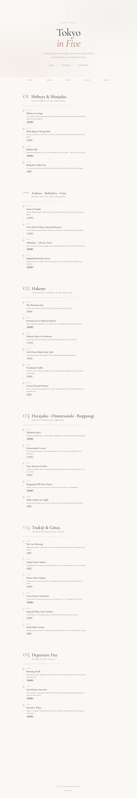

v3-tokyo-editorial
Jun 26, 2026
Latest
Editorial travel journal — Tokyo in Five
A complete redesign as a single-file editorial travel itinerary. Cormorant Garamond + DM Sans typography, warm paper tones with per-day accent colors, vertical timeline layout, sticky day navigation, and scroll-reveal animations. Fully self-contained — no frameworks, no build step.
Update log
- Full 5-day Tokyo itinerary with 22 curated experiences across 4 districts
- Vertical timeline layout with dot markers, hover states, and per-event color tags
- Day-by-day sticky navigation with intersection observer active state
- Scroll-reveal animation on summary section
- Typography: Cormorant Garamond (display) + DM Sans (body) — editorial serif meets clean sans
- Warm paper palette with per-day accent colors (rust, sage, lavender, clay)
- Responsive design — works on mobile through desktop
- Self-contained single HTML file, no external dependencies beyond Google Fonts
Design stance
- Layout: Full-width hero → sticky day nav → timeline sections → summary stats
- Typography: Cormorant Garamond for display (300/400/500) + DM Sans for body (300–700)
- Color: Warm cream paper (#faf8f5), clay (#c4a882), rust (#b8705a), sage (#7a8f72), lavender (#8a7ab0)
- Interaction: Scroll-triggered nav highlighting, hover dot transitions, fade-up reveals
Screenshots

Hero + timeline layout
Links